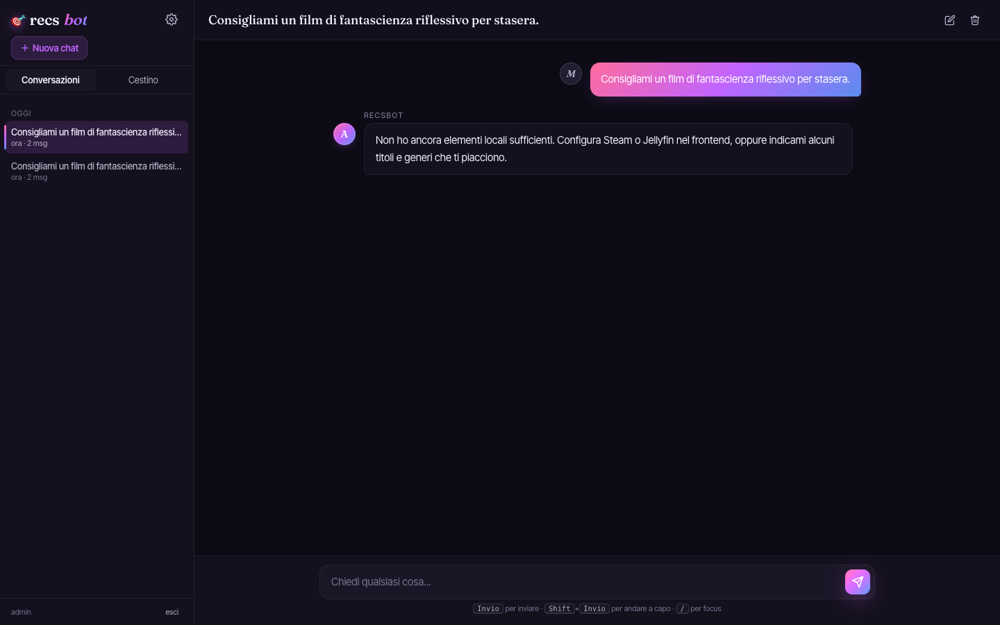

Solutions architecture
Service feasibility, API boundaries, identity, data flow, regional constraints, and honest trade-offs.
Dublin, Ireland
Cloud, platform and solutions engineer focused on systems that stay understandable when they fail.
BSc in Computing Systems and Operations, coursework complete, with a recently completed AWS Support Engineer internship and experience across Linux infrastructure, AI evaluation, full-stack delivery, and self-hosted operations. Available to start immediately.
Engineering focus
Architecture, implementation, and support are treated as one continuous system.
Service feasibility, API boundaries, identity, data flow, regional constraints, and honest trade-offs.
Linux, containers, CI/CD, observability, storage, networking, and repeatable deployment workflows.
Deterministic fallback, health checks, review states, transactional data, backups, and clear recovery paths.
Featured work
A self-hosted kitchen operations platform with transactional inventory, explainable planning, nutrition provenance, capture review, and encrypted portability.
Python, Flask, SQLite, Docker, PWA

An authenticated recommendation product with a streaming API, stable frontend contract, portable model and storage adapters, and offline fallback.
FastAPI, Flask, SSE, SQLite, Ollama
Experience
Experience spans AWS deployment training, physical infrastructure maintenance, AI output evaluation, and cross-team prototype integration.
View experienceStart a conversation